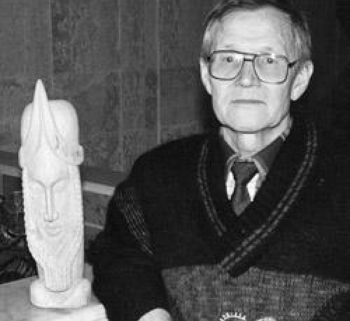

О писателе
► Известный писатель-прозаик, публицист, скульптор Миргазиян Юнус (Миргазиян Мухаметзакирович Юнусов) родился 25 мая 1927 года в деревне Исергапово Бавлинского района Татарстана в крестьянской семье. Юность Миргазияна приходится на довоенные и военные годы.

► На следующий день после начала войны, 23 июня 1941 года, умер его отец - ветеран Гражданской войны Мухаметзакир Юнусов. В этом году окончивший 6 класс сельской школы Миргазиян вынужден был бросить учебу в школе и начать работу на колхозе. В августе 1944 года он был призван на службу в военную авиационную школу, затем служил в эскадрилье бомбардировщиков на должности стрелка-радиста.
► В 1950 году по окончании Харьковского военного авиационного училища в экстерном порядке занимал должность начальника отдела связи в авиаэскадрильях. Одновременно учился в вечерней школе и получил общее среднее образование.